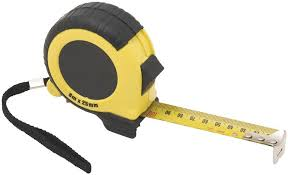
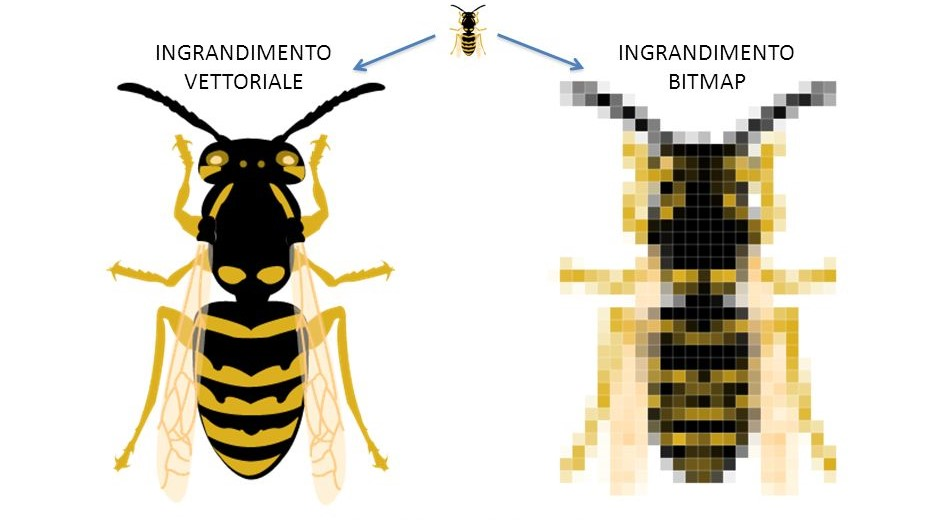
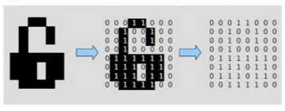
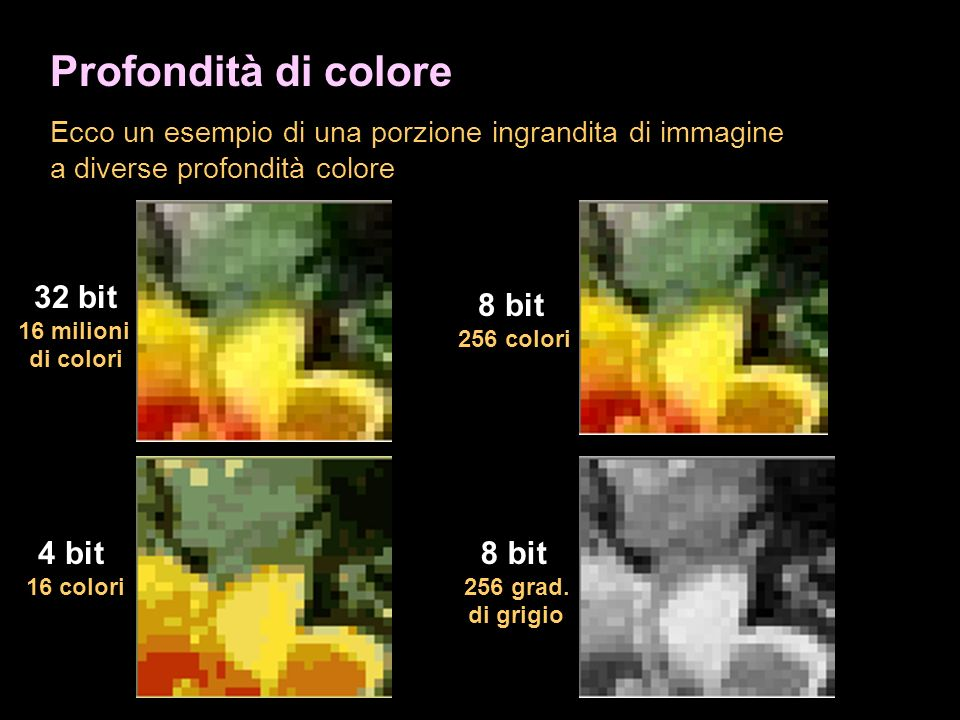
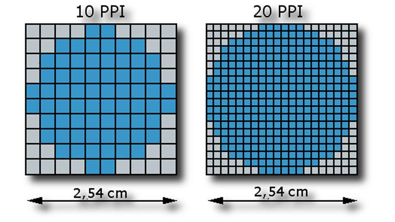
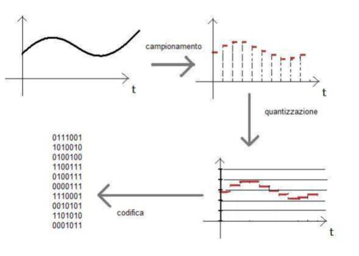
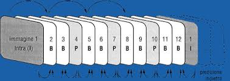

CODIFICHE IMMAGINI SUONI E VIDEO
INTRODUZIONE
Salve a tutti, in questa pagina web vedremo un'introduzione sul mondo analogico e digitale, come possiamo rapresentare immagini e audio nel digitale, il peso e il tipo delle loro informazioni ed infine qualcosina sul concetto di video.
IL MONDO ANALOGICO E DIGITALE
Quando si sente la parola analogico si vuol dire una grandezza fisica rapresentata da un insieme infinito di valori continui. Per esempio quando dobbiamo misurare la lunghezza della nostra cameretta usiamo un metro e lo mettiamo di fianco al lato da misurare. Per conoscere la lunghezza di quel lato andremo a leggere il numero presente sul metro dove finisce il nostro lato. Invece, se utilizzassimo un distanziomentro laser (anche se non ci conviene), potremmo leggere la lunghezza nel display.
Un esempio di misura analogica
Qual'é la differenza sostanziale? In una misura analogica abbiamo infiniti valori continui mentre nel digitale abbiamo finiti valori discreti.
LE IMMAGINI DIGITALI
Le immagini digitali si dividono in due categorie: le img vettoriali e le img bitmap:
Le immagini vettoriali vengono rapresentate da delle funzioni matematiche che ne descrivono i vertici, lati, curve ecc.
le immagini bitmap (chiamate anche raster) sono invece formate da una matrice di punti detti pixel.
LA CODIFICA DELLE IMMAGINI
Che valore avranno i nostri pixel dentro un'immagine? Per scoprirlo inizieremmo con qualcosa di semplice, tipo un disegno in bianco e nero. Come prima cosa dividiamo l'immagine in tanti piccoli quadratini, i pixel appunto, mettendoli all'interno di una griglia. Dopodiché diamo un valore (0/1) per ogni quadratino se e' il colore nero supera quello bianco e viceversa.
Quella che abbiamo creato e' la nostra cosidetta bitmap. La griglia che possiamo creare e' variabile e più sarà fitta più l'immagine sarà originale. D'altronde una bitmpa con più informazioni avrà una dimensione maggiore.
LA CODIFICA DEI COLORI
Se invece avessimo un'immagine a colori dovremmo utilizzare non solo 0/1 ma una sequenza di bit che codificherà ogni singolo colore. Ma quanti bit dovremmo utilizzare? Proviamo con un esempio. Immaginiamo di dover utilizzare 16 colori. Il numero di bit necessari per identificare 16 numeri sono 4 perché: 2^n = c con n=4 e c=16.
Il numero di colori utilizzabili in un singolo pixel prende il nome di profondità di colore. Oggi le profondità più utilizzate sono:
- 1 bit per il bianco e nero
- 4 bit per le scale di grigio
- 8 bit per le sfumature di grigio
- 24 bit per il true color (colori veri)
RISOLUZIONE E DIMENSIONE DI UN'IMMAGINE
Risoluzione
La risoluzione indica la quantità di pixel presenti in una minuscola area (circa 2,54 cm) e di conseguenza più sarà alta più l'immagine sarà nitida.
Peso dell'immagine
Ora il nostro che bagaglio culturale e' pronto , andiamo calcolare lo spazio effettivo occupato da un'immagine. Facciamo un esempio con quella qua sotto.
- Risoluzione = 430x323
- Profondità di colore = 24 bit
- Peso = 430x323 * 24 / 8 = 416670 byte
COMPRESSIONE E TIPI DI FILE
Le immagini sono memorizzati in specifivi tipi di file (png, jpeg, ecc.) tutti dalle caretteristiche uniche. Però alcuni di questi eseguono anche una compressione sull'immagine. Vediamo quali
Il formato GIF

- Questo formato non esegue compressione
- Utilizza massimo 8 bit per la profondità di colore e supporta l'opacità
- Molto utilizzato nella img vettoriali
- Supporto più fotogrammi per creare piccole animazioni
Il formato jpg
- JPG e JPEGs sono la stessa cosa
- Questo formato esegue compressione e quindi perdita di qualità del file
- Profondità di colore supportata: 24 bit ma non supporta l'opacità
Il formato png
- Esegue compressione senza perdita di dati
- Supporta fino a 32 bit per i colori e la trasparenza
- Sono file di grosse dimensioni
- Si divide in 2 alternative: png 8 e png 24
- il png 8 e' utlizzato per i colori a 8 bit e assomiglia al GIF
- il png 24 supporta 24 bit e si affianca al JPEG
I SUONI E LE ONDE
I suoni nella vita reale sono oscillazioni delle particelle d'aria. Nella fisica essi vengono rapresentati come delle onde che variano ampiezza nel tempo. L'ampiezza e' altezza dell'onda e il periodo e' la distanza fra due creste d'onda, metre la frequenza e' il numero di periodi presenti in us secondo (Hz).
L'orecchio umano percepisce esclusivamente i suoni tra i 20 Hz e i 20000 Hz.
CAMPIONAMENTO DEI SUONI
La descizione sui suoni attraverso le onde e' un'informazione continua ed analogica. Per rapresentare i suoni nell'universo digitale occorre trovare una codifica adatta, cioe' la tecnica del campionamento.
- Si divide l'onda in tanti frammenti chiamati campioni (campionamento)
- Il numero di campioni presenti in un secondo e' detto frequenza di campionamento
- Si assegna un valore a diverse ampiezze dell'onda
- Ad ogni campione corrisponderà un certo valore d'ampiezza (quantizzazione)
- Si estraggono i numeri ottenuti e questa sarà la nostra onda digitale
Che codifica usare?
Ora e facile chiedersi: che frequenza di campionamento devo usare e quanti bit di codifica? Le frequenze più usate sono: 11, 22 e 44 KHz. Le codifiche invece sono: 4, 8, e 16 bit. Per venirci incontro a questo dilemma ci aiuta Nyquist. Infatti il suo teorema dichiara che per riprodurre il segnale originale basta un numero di campioni pari o superiore al doppio della frequenza dell'onda. Visto che la voce umana ha come fr 20000Hz bisognerà campionare a 40000 campioni. Infine, bisogna sempre ricordare che più informazioni regitriamo, più peso occuperà il nostro file
PESO OCCUPATO DAL FILE
Volendo calcolare 1 minuto di musica in qualità CD, campionata a 16 bit e con 2 canali d'uscita, dovremmo fare:
- 60 secondi
- 44100 Hz
- 16 bit
- 2 canali
- Peso = 60 * 44100 * 16 * 2 = 10584000 byte = 10.09 Megabyte
I FORMATI D'AUDIO
Il file .WAV
Sono file i grosse dimensioni poiché registrano molte informazioni sulle onde. Supportano anche voce umana e effetti speciali
Il file Mp3
Il nome deriva da Motion Pictures Experts Groups, una sigla che indentificava un gruppo di ricercatori, intenti a creare una codifica standarcd internazionale per la compressione audio e video. L'obbiettivo di questo algoritmo é di comprimere il più possibile i file , purché la qualità audio/video rimanesse invariata. In pratica l' MPEG eliminava i campioni non percepiti dal nostro orecchio, come le frequenze basse adiacenti a quelle alte.
Il file WMA
E' l'acronimo di windows media audio, un formato di compressione audio ideato da Microsoft per far fronte all'MP3. Esistono più versioni di questo formato. La ver. Pro permette di ascoltare musica ad alta qualità. La ver. lossless invece impedisce una perdita di valore.
Il formato AAC
Acronimo di Adavanced Audio coding. E' un formato che perde valore audio in cambio di file leggeri. E' stato concepito come il successore dell' MP3 ed é diventato molto popolare quando fu adotatto da Apple come algoritmo per iTunes.
IL CONCETTO DI VIDEO
Un concetto di video primitivo non esiste. Il video nasce come un'unione tra sequenze di immagini e audio. Le immagini e i suoni vengono codificati come visto prima. L'occhio umano non riesce a distingueredue immagini diverse ad una certa velocità. Questa velocità corrisponde a 24 fps, dove fps = fotogrammi per secondo.
DIMENSIONE E FORMATI FILE
Dimensione di un video
Se voglio ottenere il peso di un file video devo solo unire la dimensione delle immagini a quella dell'audio. Se facessimo così Però otterremo risultati eccessivi i video di lunga durata verrebbero troppo pesanti. Per eliminare dati inutili si e' deciso, in fase di compressione di caricare solo la parte del fotogramma differente da quello precedente.
iL FORMATO MP4
Lo standard attualmente più famoso e' l'MP4 ed e' utilizzato per tv, internet, streaming, ecc.
CONTAINER E CODEC
Il container e' la parte del file video che contiene l'audio e il video. Inoltre definisce l'estensione file. I più famosi sono l'AVI e l'MP4.
Il codec e' l'algoritmo di compressione per udio e video. I più famosi sono: H.264 (MP4), WMV(Microsoft), VP9(Youtube).